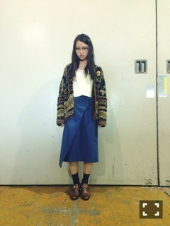
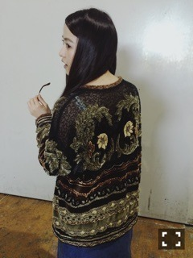

| 2015/09 27 Sun | にくきりてっぽう。 668回目 |
今日、稽古が早く終わったので
犬組8人でご飯行ってきました。
なかなか大人数で行く機会はないけど
本番前に行こうと話してたのが実現！
久々に爆笑したなあ。
話が尽きない｡ﾟ(ﾟ＾∀＾ﾟ)ﾟ｡
居心地が良い8人です。
明日からまた集中して頑張れます。
みんなありがとう！
舞台衣装はこれとは
まったく違います。
稽古では、いろんなものを
消費して、発散しています。
観客の方にこう思ってほしい！
という目標を立てて
役に励んでいます。
捉え方はそれぞれでしょうが、
なによりこの舞台を観てほしい
気持ちでいっぱいです。
共演者のみなさんから
刺激受けまくりです。
チケット一般受付始まりました！
舞台『すべての犬は天国へ行く』
10月1日〜10月12日

横浜握手会の時の服〜

このカーディガン、
装飾がいっぱいで重たいけど
お気に入りです。
お世話になってるbodysong.さん
初森ベマーズ最終話に
出演させていただきました！
ななまる氏！！

イシノモリ、テヅカ、アカツカ
写真に撮り慣れてない設定です
イマドキとユウウツが好きでした。
みんな忙しそうだったけど、
また乃木坂で
ドラマやってほしひなあ！
余談ですが
ロマンチカクロックという少女漫画
表紙も内容も乙女すぎて癒される。
デザイン、川谷康久さん、、！
以前話していたように、
キキララ的な可愛さがあります。
MdNの連載取材時に頂いた一冊、
チョコレート•アンダーグラウンドも
とっても可愛い。
また川谷さんと少女漫画の
お話したい、、
今日の稽古で、猫背さんに
乙女なもの苦手なんですよ
って言ったのにこんな話。
身につけるより、
デザイン等で見るのは
好きということです。
まりか
コメント(545)
2015/09/27 23:00